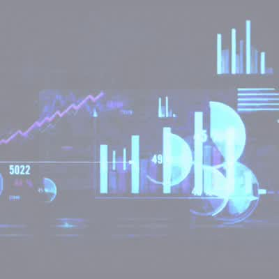

Series 2.01 · Limited
10 @ 22 ETH this drop
US Real Estate Market 2025–2028
The US Real Estate Market will be very interesting to watch during the next 3 years. There are so many geo-political, economic, and social phenomena influencing it — specifically the commercial and residential markets. You will have to get this NFT in order to learn how this market will go. Trade the NFT and benefit twice.